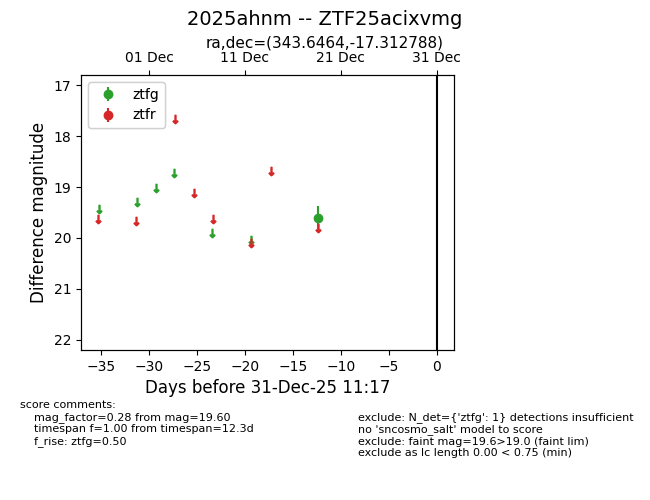
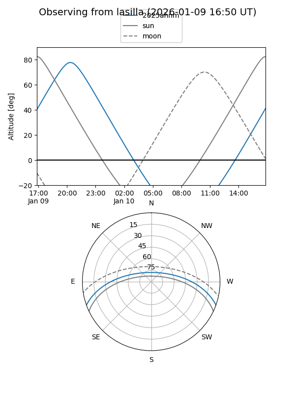
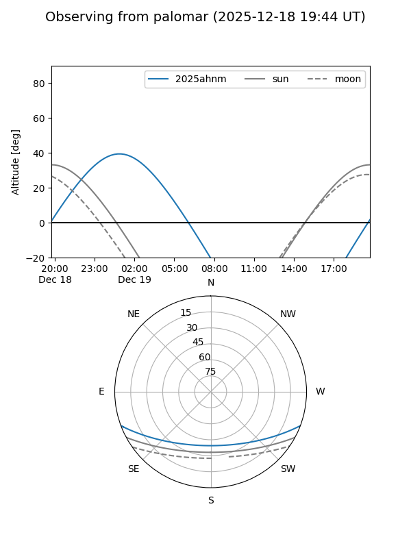

2025ahnm
Target 2025ahnm at 2025-12-31 18:00
Aliases and brokers:
FINK: link
Lasair: link
ALeRCE: link
TNS: link
YSE: link
alt names
ZTF25acixvmg (ztf,fink_ztf)
2025ahnm (tns,yse)
Coordinates:
equatorial (ra, dec) = 343.6464,-17.31279
equatorial (HMS+DMS) = 22:54:35.13,-17:18:46.04
galactic (l, b) = (46.8083,-61.31755)
Flags:
Photometry:
last ztfg=19.60
1 ztfg detections
Lightcurve

Visibility


Additional plots